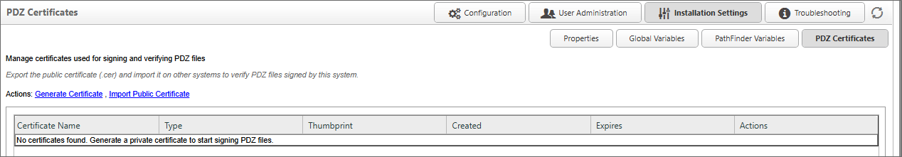
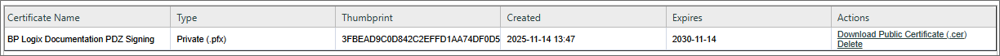

You can only have one active private certificate per server at any given time.
You can only have one active private certificate per server at any given time.For Process Director v6.1.600 and higher, Content List objects that are exported to PDZ files can be digitally signed via the use of certificates. These certificates are managed from the PDZ Certificates page. This page enables the use of a private certificate to perform digital signing of all PDZ files exported from the system, and one or more public certificates which are used to verify the authenticity of PDZ files when they are imported into the system.

To create a private certificate in Process Director, clicking the Generate Certificate action link will automatically create the certificate that will be used for exporting all PDZ files from the system.

You can only have one active private certificate per server at any given time.
When exporting a PDZ file, the usual intent is to import it to another system, e.g., exporting a PDZ file from a development system to a production system. Since the same certificate must be used to verify a signed PDZ, the public certificate from one system can be downloaded and imported to another system. In the Actions column for each certificate on the system, an action link labeled, Download Public Certificate (.cer), will, when clicked, download the public certificate file to your local computer. While the private certificate will be used on the source system to sign the PDZ on export, the public certificate is used on a target system to verify the PDZ on import.
On the PDZ Certificates Page pf the target server, you can click the Import Public Certificate link to navigate to the location of the downloaded public certificate, then upload it to the target server. Once both installations have the same certificate configured, PDZ files can be freely exported and imported between servers.
While you may only generate one private certificate at a time inside Process Director, you can upload multiple public certificates to the system. For instance, while a Development server will only have its specific private certificate for signing , you would need to import the public certificates from both your Production and Staging servers to enable PDZ files from those servers to be imported into your Development server. So, each server in your Prod/Stage/Dev environment will have one private key for signing, and public keys from the other two installations in the environment for verification. As long as there is a valid public key on the system, PDZ files can be seamlessly imported into the system.
In the Actions column for each certificate on the system, an action link labeled, Delete, will, when clicked, delete the selected certificate from the server. This is useful for removing/replacing expired certificates, to ensure that only current, active certificates remain in use. Expired certificates cannot be used for importing or exporting objects. Attempting to use them will result in a security error.
Once you have configured the public and private certificates for your Process Director installations, you can choose whether to use a certificate when exporting Content List objects to PDZ. There are no UI changes to the import process. As long as the appropriate public certificate exists on the target server, imported PDZ files will be verified automatically on import.
For information on how to configure a certificate during a PDZ export, please see the Exporting and Importing Objects topic of the implementer's reference.